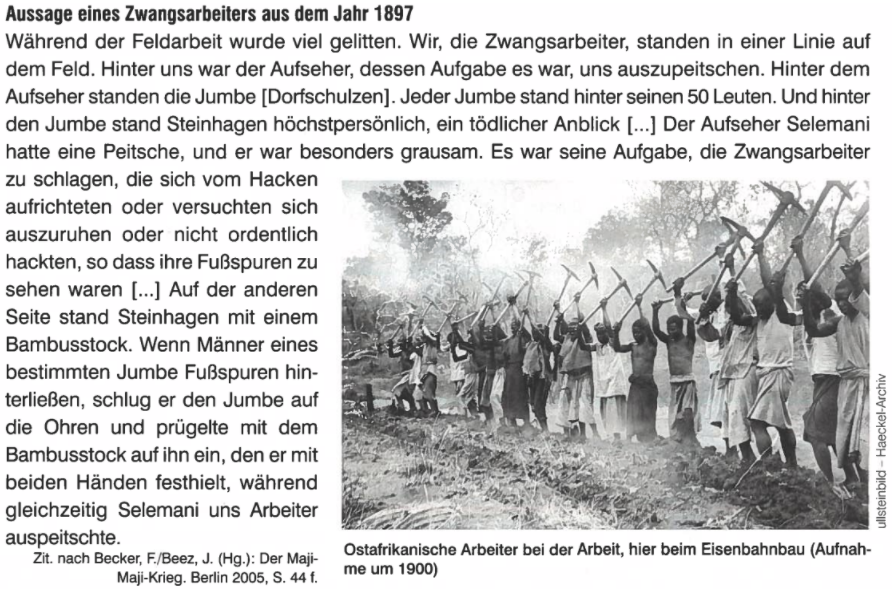

Generelle Informationen zur Kolonialzeit und dem Maji-Maji Krieg in Deutsch-Ostafrika
Title description, Dec 7, 2017

Deutsch-Ostafrika wurde 1884 von Deutschland erobert und gegründet. Schon seit der Eroberung kam es zu Aufständen, welche aber immer niedergeschlagen wurden. Zudem blieben diese Aufstände regional begrenzt, da die Stämme in Ostafrika untereinander zerstritten waren. Bis 1898 konnten die deutsche Kolonialmacht einen Grossteil des Landes erobern. Die Situation eskalierte jedoch; Die Deutschen versuchten die Wirtschaftskraft durch den Baumwollanbau zu steigern. Da dies scheiterte zog die Kolonialmacht Steuern von den Einheimischen ein. Am Anfang gab es nur eine Hüttensteuer, danach auch eine Kopfsteuer. Wer seine Steuern nicht bezahlte, bezahlte diese im Gefängnis mit Zwangsarbeit ab. Weitere Faktoren für die Eskalation sind die Respektlosigkeit der Deutschen, Verbot der Grosswildjagd, Bestrafung bei Versäumnis der Anordnungen sowie der erzwungene Anbau von Baumwolle. Etwa 20 Stämme vereinten sich gegen die Deutschen. Es kam zum Maji-Maji Krieg, bei dem viele Ostafrikaner gestorben sind. Die Folgen der deutschen Kriegsführung waren der Krieg, eine Hungernot und epidemische Krankheiten. Wobei 200'000 bis zu 300'000 Ostafrikaner gestorben sind. Deutsch-Ostafrika handelt es sich um eine formelle Herrschaft, denn die Deutschen Gouverneure und Beamten übernahmen die Herrschaft über die Ostafrikaner. Dies erzwungen sie durch einen Krieg und Gewalt. Damit die Afrikaner vor den Deutschen Angst hatten, folterten die deutschen Beamten die Afrikaner. Zudem wurden die Afrikaner für jede Kleinigkeit bestraft. Eines der deutschen Ziele war es, an Ressourcen zu gewinnen. Auf gemeinschaftlichen Feldern sollten die Ostafrikaner Baumwolle anbauen. Jedoch war dies nicht profitabel für die Deutschen. Deswegen fingen diese an für jegliches Steuern zu verlangen, um an Geld zu kommen. Auftreten der Deutschen war sehr respektlos und niederlassend gegenüber den Ostafrikanern. Das führte dazu, dass die Ostafrikaner einen Groll auf die Deutschen entwickelten. Gründe für ihren Groll waren zum Beispiel das Verbot der Grosswildjagd durch Einheimische und die «rigorosen Strafen bei jedem Versäumnis».
Wie haben die Einheimischen den Maji-Maji Krieg beziehungsweise die Kolonialzeit wahrgenommen?
Title description, Sep 2, 2017
Diese Textquelle stammt von einem ostafrikanischen Zwangsarbeiter. Dieser wurde von einem Reporter befragt, der diesen Text aufgeschrieben hat. Der Zwangsarbeiter war tätig am Eisenbahnbau unter der Macht von Deutschland. Die Quelle ist 1897 entstanden und wurde 2005 (wieder)veröffentlicht. Der Befragte nimmt keine Stellung zur über ihm herrschende Kolonialmacht an. Jedoch kann man erkennen das der Befragte sehr unter der deutschen Aufsicht und Macht gelitten hat. Es wird berichtet wie er und die einheimischen Zwangsarbeiter geschlagen und ausgepeitscht wurden ehe sie einen Fehler machten oder aufhörten zu arbeiten. Der befragte Ostafrikaner fühlt sich verbündet mit den anderen Einheimischen, er bezeichnet sich als Teil von ihnen. Das sieht man am folgenden Zitat; „Wir, die Zwangsarbeiter“ (ebd. Zeile 1). Ausserdem mussten die Jumben ihre Männer strafen. Deswegen kann man in diesem Fall von zuteils von einer (partiellen) indirekten Herrschaft sprechen. Jedoch nicht ganz denn trotzdem haben die Deutschen die Macht vor Ort übernommen und über Ostafrika geherrscht.
Welche Haltung nimmt der Autor zum Kolonialismus im Allgemeinen, zu dieser Kolonie im Speziellen ein?
Welche Haltung nimmt er gegenüber den Einheimischen ein? Der Zwangsarbeiter berichtet, wie die Aufseher mit den Zwangsarbeitern umgegangen sind. Die Arbeiter wurden geschlagen und gepeitscht sollten sie aufhören zu arbeiten oder einen Fehler machen. Der Berichtende erlebt den Kolonialismus sehr brutal sowie negativ. Es wird nicht erwähnt, was er über die deutschen Kolonialherren denkt. Jedoch kann man sagen er sowie viele andere Zwangsarbeiter unter der Kolonialmacht litten, deswegen kann man in diesem Fall von zuteils von einer (partiellen) indirekten Herrschaft sprechen. Jedoch nicht ganz denn trotzdem haben die Deutschen die Macht vor Ort übernommen und über Ostafrika geherrscht.